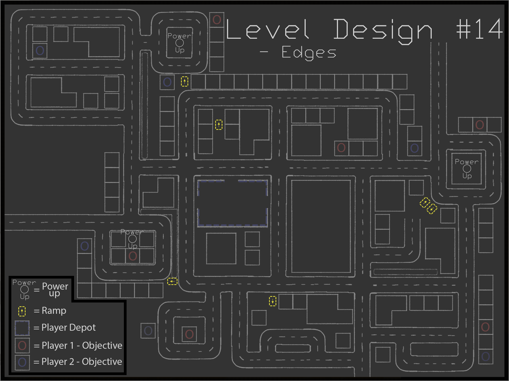
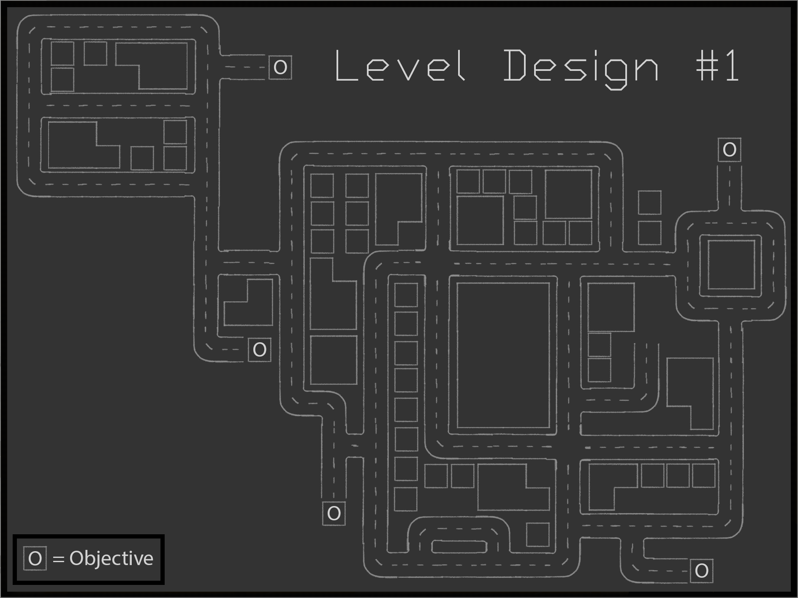

The map below showcases the final design. In this project, I served as the Level Designer, collaborating closely with the team to bring the map from concept to completion. Below the image, you'll find my design process, which outlines my initial concept and the steps I took blending the requirements with my own ideas to achieve the final outcome.


This was the initial level design concept, created before all core mechanics had been finalized by the team. To inform key design decisions. I referenced established driving games with a "open worlds," ensuring the layout would feel intuitive and engaging for players, even in the early iterations.